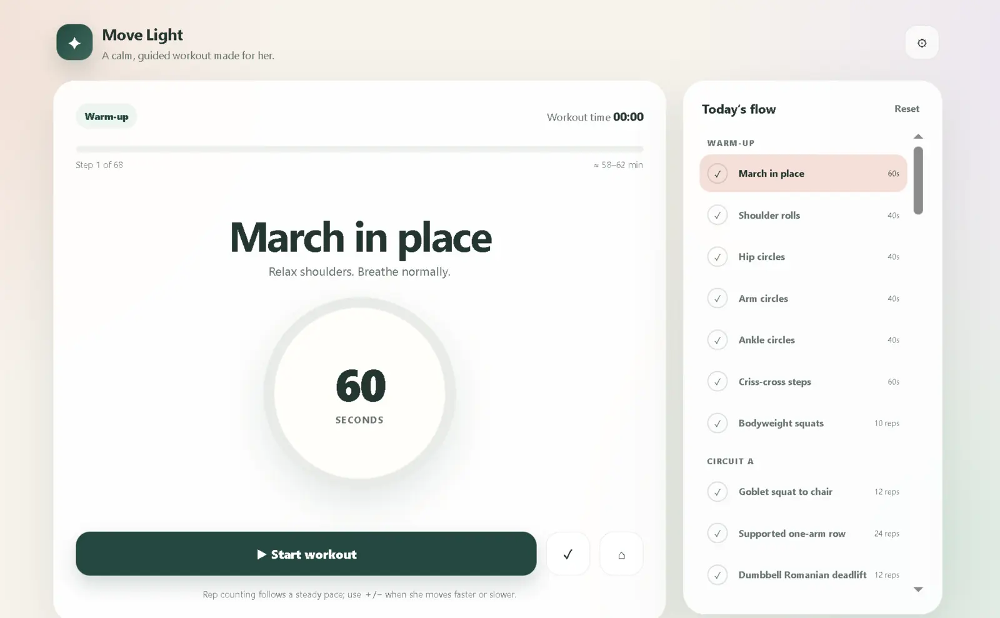
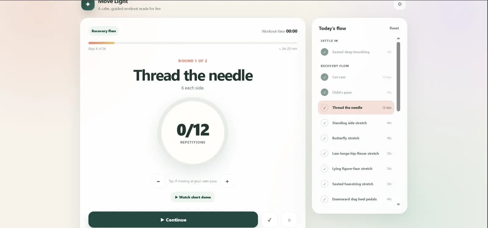
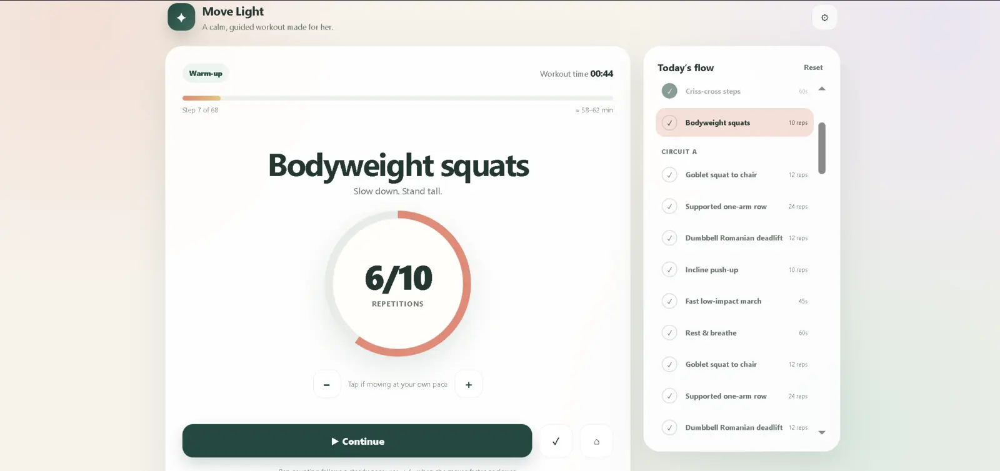
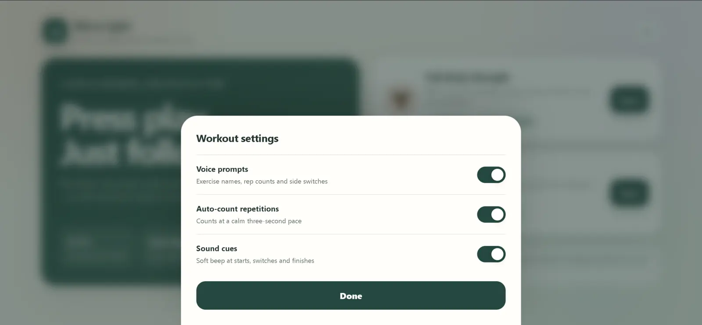

03 / Freelance · Real-client application
A workout guide
that sets the pace.
A low-stimulation app for one client to follow strength and recovery sessions, with guided timing, rep counts and rest periods.
- My role
- UX and interaction design
- Context
- Freelance client project
- Implementation
- AI-assisted build
with Claude and Codex - Outcome
- Deployed on Netlify


Client application / Guided strength + recovery
Less to manage.
More room to move.
My client wanted to start a session when it suited her, without keeping track of every timer and repetition.
She needed alternating strength and recovery sessions tailored to her level. A detailed conversation about her goals and constraints informed the brief: calm screens, automatic guidance and room to move at her own pace.
This was a single-client project, not a broader user study.
Design direction.
AI-assisted implementation.
I defined the brief, flows, screen behaviour and interface copy. I used Claude and Codex to generate the implementation, then directed revisions to pacing, controls and wording before deploying it on Netlify.
The design decisions and review were my contribution. The application code was AI-generated; I am not presenting it as hand-coded frontend work.
Guidance,
without pressure.
-
Keep the session moving.
Automatic rep counting, timers, rests and next-exercise prompts reduce the need to check a separate clock.
-
Make pace adjustable.
Slow counting and +/− controls let the client correct a rep count without restarting the exercise.
-
Let the client choose the cues.
Voice, rep counting and sounds can be switched on or off independently.
-
Make the plan visible.
A session overview, step progress and short form demonstrations help explain what comes next.






Built for one person.
Ready to learn from use.
The app was deployed, and the client agreed for it to be shown in my portfolio. The recording below demonstrates the guided experience; no longer-term usage metrics or follow-up study are available.
Next I would review how the client uses it over time, check text size and contrast, and add clearer guidance to follow a clinician’s advice. A session history would only be useful if she needs it.
The project reinforced a simple lesson: for a focused tool, choosing what to leave out can be as useful as adding another feature.
Open the client app